Architettura Ibrida: Il Meglio dei Due Mondi con Supabase e Spring Boot
Pubblicato il 14 January 2026
Invece di scegliere tra la semplicità di Supabase e la potenza di Spring Boot, perché non combinarli entrambi? Scopri un’architettura ibrida che sfrutta il meglio di ogni tecnologia.
- toc
-
[]
- Il falso dilemma dell’architettura moderna
- Vision Architettonica
- Principi di progettazione
- Orchestrazione dei Flussi
- Matrice di decisione
- Esempi di Architettura per Tipo di Progetto
- Strategia di migrazione progressiva
- Costi e Considerazioni Operative
- Conclusione: L’Equilibrio Perfetto
- Per andare più lontano
- Prospettive di evoluzione
- Testimonianze architettoniche
- Sintesi: Un Paradigma Architettonico Moderno
- Conclusione Finale
Il falso dilemma dell’architettura moderna
Quando si costruisce un’applicazione moderna con un frontend statico, spesso ci si ritrova di fronte a una scelta binaria :
-
Puntare tutto su una soluzione Backend-as-a-Service(Supabase, Firebase) - semplice ma limitata
-
Costruire un backend completo(Spring Boot, Node.js) - potente ma complesso
Questa scelta è un falso dilemma. L’architettura ibrida propone una terza via: utilizzare ogni tecnologia dove eccelle.
Vision Architettonica
L’Architettura Tradizionale : Monolitica
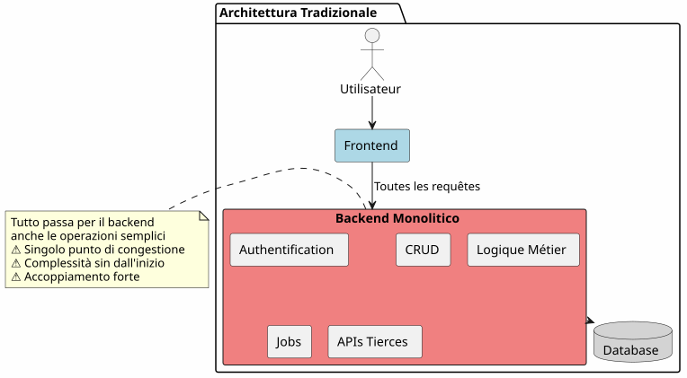
In questo approccio, anche le operazioni più semplici (lettura di un articolo, creazione di un commento) devono passare attraverso il tuo backend. Paghi il costo della complessità fin dal primo giorno.
L’architettura BaaS: ogni delegato
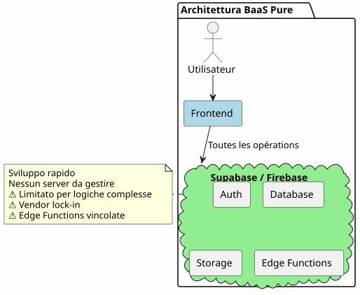
Al contrario, delegare tutto a un BaaS è allettante all’inizio ma mostra rapidamente i suoi limiti non appena la logica di business si complica.
L’architettura ibrida : separazione delle responsabilità
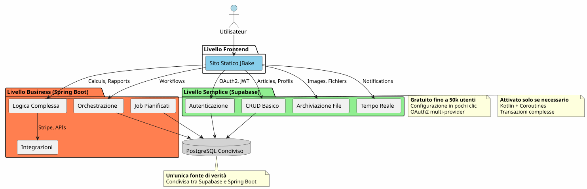
L’architettura ibrida separa chiaramente le responsabilità in base alla complessità e alla natura delle operazioni.
Principi di progettazione
Principio 1: Iniziare semplicemente, evolvere intelligentemente
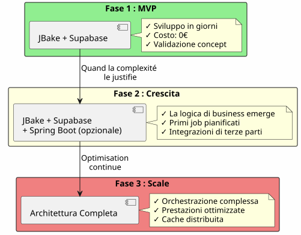
Non costruire Spring Boot se non ne hai bisogno.Inizia con Supabase, aggiungi Spring Boot quando la complessità lo giustifica.
Principio 2 : Separazione per natura dell’operazione

Principio 3 : Un’unica Fonte di Verità

Condividendo la stessa istanza PostgreSQL, Supabase e Spring Boot lavorano sugli stessi dati senza sincronizzazione complessa.
Orchestrazione dei Flussi
Flusso 1 : Autenticazione Centralizzata
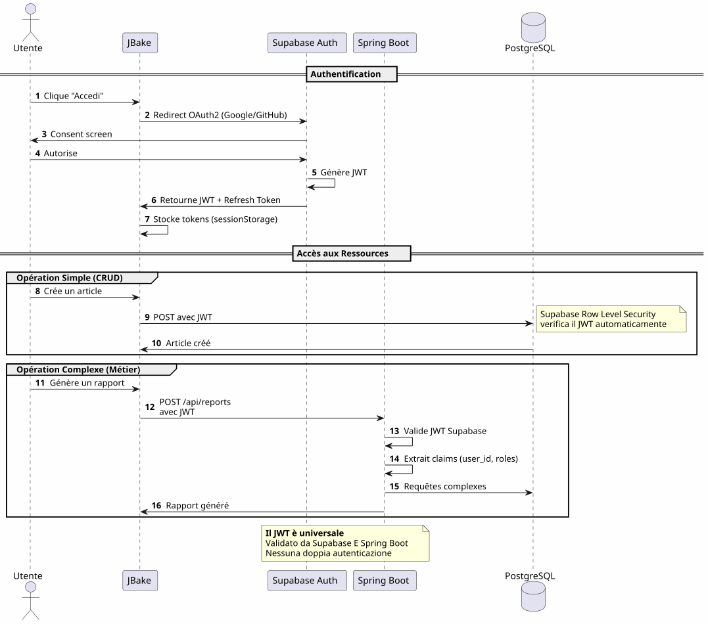
Punto chiaveUn solo processo di autenticazione, un solo JWT, utilizzabile ovunque.
Flusso 2: Orchestrazione di un Processo Aziendale Complesso
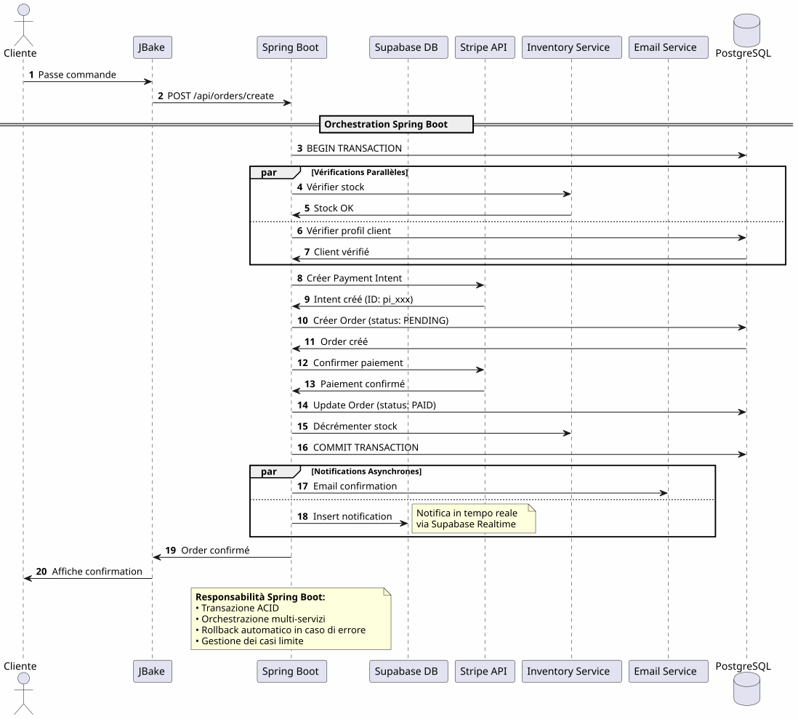
Cosa porta Spring Boot: Orchestrazione affidabile di processi complessi che coinvolgono più sistemi con garanzia transazionale.
Flusso 3 : Lavori Pianificati e Sincronizzazioni
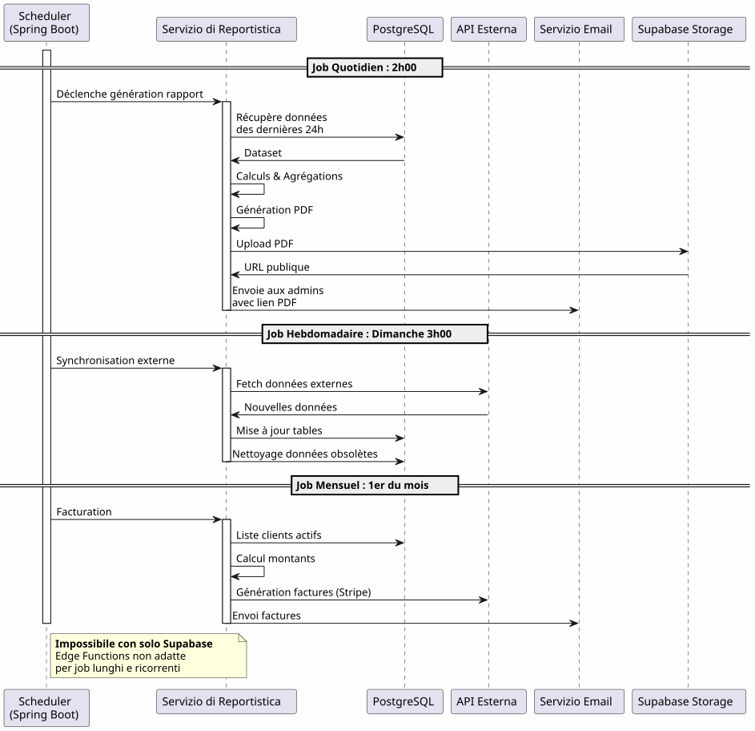
Cosa Spring Boot porta: Lavori pianificati affidabili con gestione dello stato, retry automatico, e esecuzione garantita.
Matrice di decisione
Quando usare Supabase?

Quando Utilizzare Spring Boot ?

Esempi di Architettura per Tipo di Progetto
Blog / Portfolio

Verdetto: 100% Supabase basta ampiamente.
Applicazione SaaS
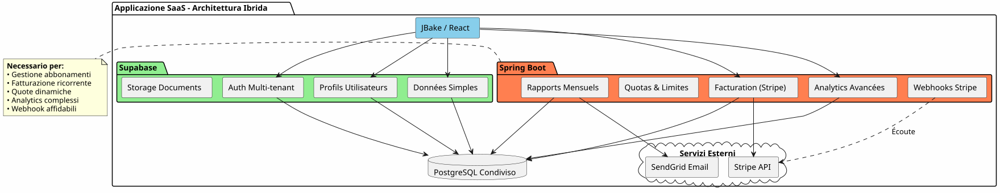
Verdetto: Architettura ibrida necessaria. Supabase per l’essenziale, Spring Boot per la parte critica (pagamenti, fatturazione)
e-commerce
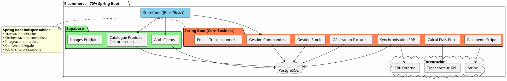
Verdetto: Spring Boot indispensabile. Supabase solo per auth e catalogo.
Strategia di migrazione progressiva
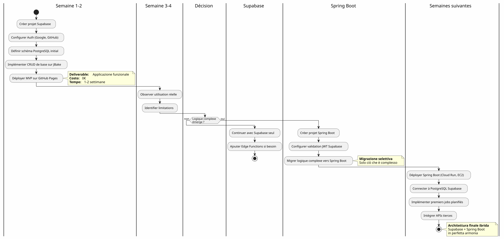
Costi e Considerazioni Operative
Struttura dei costi
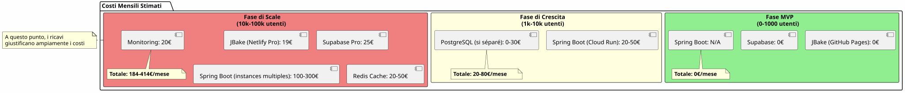
Responsabilità operative
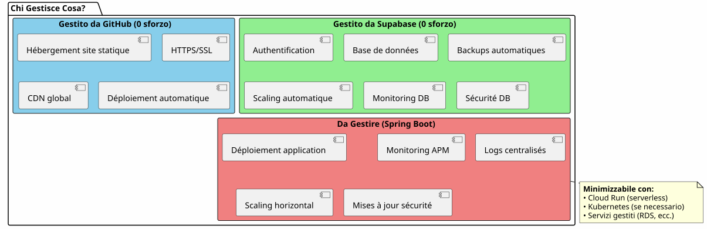
Conclusione: L’Equilibrio Perfetto
L’architettura ibrida Supabase + Spring Boot non è un compromesso, è unasinergia.
I principi da ricordare

Quando Scegliere Questa Architettura?
✅ Questa architettura è ideale se :
-
Lei vuole avviare rapidamente (MVP in giorni, non in mesi)
-
Anticipi una crescita della complessità aziendale
-
Vuole minimizzare i costi iniziali
-
Ti piace PostgreSQL e vuoi una fonte di verità unica
-
Apprezzi Kotlin e le Coroutine per il codice di business
-
Vuoi evitare il vendor lock-in totale
❌ Questa architettura NON è adatta se :
-
Il tuo progetto è semplice e lo resterà (blog personale → 100% Supabase basta)
-
Hai già una stack backend consolidata che padroneggi
-
Preferisci un monolite tradizionale
-
Hai bisogno di .NET, Python, o altro linguaggio lato backend
Visione d’insieme finale
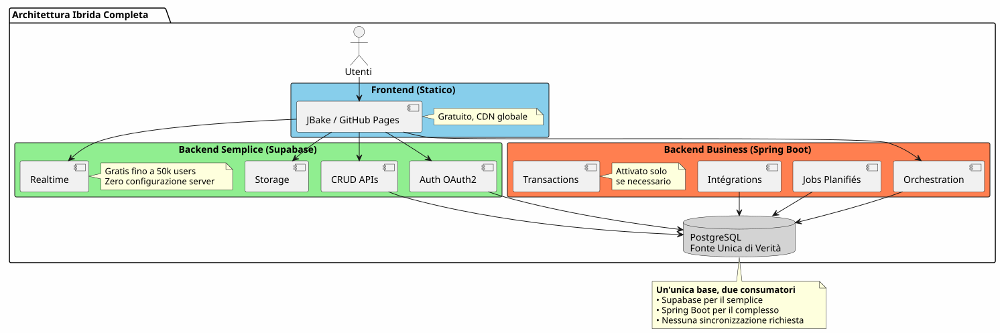
Il meglio dei due mondi
Questa architettura ti dà :
🚀 La velocità di Supabase
-
Avvio in ore, non in settimane
-
Autenticazione OAuth2 in pochi clic
-
APIs REST generati automaticamente
-
Zero configurazione del server
💪 La potenza di Spring Boot
-
Kotlin e Coroutines per codice asincrono elegante
-
Orchestrazione di processi aziendali complessi
-
Lavori pianificati affidabili
-
Transazioni ACID garantite
-
Ecosistema Spring completo
💰 L’economia progressiva
-
0€ per avviare e validare
-
Costi che seguono la crescita
-
Nessun sur-engineering prematuro
🎯 La Flessibilità Architettonica
-
Migrazione progressiva senza rifacimento
-
Aggiunta di Spring Boot solo se necessario
-
Nessun vendor lock-in totale
-
Architettura evolutiva
Per andare più lontano
Risorse Tecniche
Documentazione Supabase :
Documentazione Spring Boot :
Articoli complementari :
-
Protezione delle API con JWT
-
Ottimizzazione delle prestazioni di PostgreSQL
-
Schemi di migrazione progressiva
-
Gestione degli errori in architettura distribuita
Casi d’uso reali
Questa architettura ibrida è utilizzata con successo in :
-
SaaS B2B: Autenticazione Supabase, fatturazione Spring Boot
-
Marketplace: Catalogo Supabase, transazioni Spring Boot
-
Piattaforme di contenuti: Articoli Supabase, analytics Spring Boot
-
Strumenti interni: CRUD Supabase, flussi di lavoro Spring Boot
Checklist di Avvio
Fase 1 - Fondamenta (Settimana 1)
-
Creare account Supabase - [ ] Configura progetto PostgreSQL - [ ] Attiva Auth (Google, GitHub) - [ ] Definire schema iniziale - [ ] Configurare la sicurezza a livello di riga - [ ] Testare le API da JBake
Fase 2 - MVP (Settimana 2-3)
-
Implementare le pagine principali - [ ] Integrare l’autenticazione OAuth2 - [ ] Creare moduli CRUD - [ ] Configurare Storage per i file - [ ] Deployare su GitHub Pages - [ ] Testare in condizioni reali
Phase 3 - Evoluzione (secondo le esigenze)
-
Identificare le esigenze di logica complessa - [ ] Creare progetto Spring Boot se necessario - [ ] Configurare la validazione JWT Supabase - [ ] Connettersi a PostgreSQL Supabase - [ ] Migrare funzionalità complesse - [ ] Implementare i lavori pianificati - [ ] Distribuire Spring Boot (Cloud Run, ecc.)
Anti-Patterns da evitare
❌ Non fare :
-
Duplicare i dati tra Supabase e Spring Boot
-
Creare due basi PostgreSQL separate
-
Codificare l’autenticazione da soli
-
Usare Spring Boot per un CRUD semplice
-
Sovra-architettare fin dall’inizio
-
Ignora la sicurezza a livello di riga di Supabase
✅ Fare piuttosto :
-
Condividere un unico database PostgreSQL
-
Lasciare che Supabase gestisca l’autenticazione
-
Usare Spring Boot solo per la complessità
-
Iniziare semplice, evolvere gradualmente
-
Sfruttare i punti di forza di ogni tecnologia
-
Proteggere con RLS a livello di database
Prospettive di evoluzione
Aggiunta di Nuove Capacità
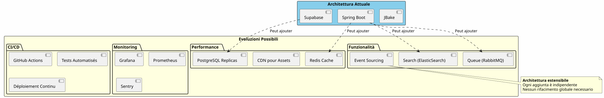
Scalabilità orizzontale
Quando la tua applicazione cresce, l’architettura ibrida scala naturalmente:
Supabase:
-
Scala automaticamente fino a milioni di operazioni
-
Read replicas per prestazioni di lettura
-
Ripristino punto nel tempo per la sicurezza
Spring Boot:
-
Multiple istanze dietro il load balancer
-
Il design stateless facilita lo scaling orizzontale
-
Kubernetes per orchestrazione se necessario
PostgreSQL:
-
Partizionamento per tabelle voluminose
-
Pooling di connessioni (PgBouncer)
-
Sharding è davvero necessario (raro)
Testimonianze architettoniche
Startup SaaS (50k utenti)
_ Abbiamo iniziato al 100% con Supabase. A 5k utenti, abbiamo aggiunto Spring Boot solo per la fatturazione Stripe e i rapporti mensili. Un anno dopo, l'80% delle nostre operazioni passa ancora attraverso Supabase. Spring Boot gestisce solo la parte critica. Questa separazione ci ha permesso di scalare senza dover rifare tutto. _
Piattaforma E-learning (10k utenti)
__ L’autenticazione OAuth2 di Supabase ci ha fatto guadagnare 3 settimane di sviluppo. Le API auto-generate gestiscono tutto il nostro catalogo di corsi. Spring Boot serve solo per i certificati PDF e le email di avanzamento. Architettura semplice, mantenibile, scalabile. (empty)
Marketplace B2B (3k utenti)
_ Spring Boot gestisce le transazioni tra acquirenti e venditori (critico). Supabase gestisce tutto il resto: profili, messaggistica in tempo reale, documenti. Il fatto che condividano lo stesso database PostgreSQL ci evita ogni sincronizzazione complessa. La scelta architettonica migliore che abbiamo fatto. _
Sintesi: Un Paradigma Architettonico Moderno
L’architettura ibrida Supabase + Spring Boot rappresenta un nuovo paradigma:la specializzazione architettonica.
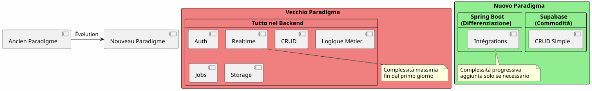
Il principio fondamentale :Non costruire ciò che già esiste sotto forma di servizio. Concentrati su ciò che differenzia la tua applicazione.
La regola 80/20
Nella maggior parte delle applicazioni:
-
80% delle operazionisono lo standard CRUD → Supabase
-
20% delle operazionirichiedono la logica di business → Spring Boot
Questa regola naturale giustifica l’architettura ibrida.
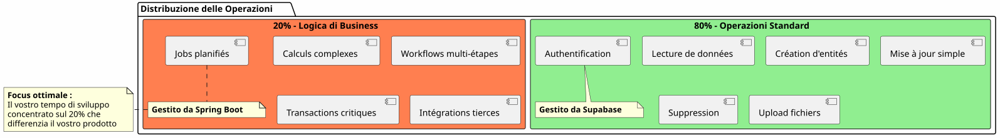
Conclusione Finale
L’architettura ibrida non è un compromesso tecnico, è unadecisione strategica.
Ti permette di :
-
✅ Avviare rapidamente con un MVP funzionante
-
✅ Convalida il tuo mercato senza investimenti pesanti
-
Evolvere gradualmente quando la complessità lo esige
-
✅ Padroneggia i tuoi costi a ogni passo
-
✅ Sfruttare il meglio di ogni tecnologia
-
✅ Evitare il sovra-engineering prematuro
-
✅ Conservare la flessibilità per il futuro
Rappresenta:
-
🎯pragmatismo: Ogni tecnologia in cui eccelle
-
🚀velocità: Time-to-market minimo
-
💰Economia: Costi allineati al valore
-
🔮Evolutività: Architettura che cresce con te
-
🛡️RobustezzaServizi collaudati e affidabili
Il tuo prossimo passo
Se questa architettura ti parla, ecco da dove iniziare :
-
Crea un account Supabasepython
print(" (gratuit)".replace("gratuit", "gratuito"))
-
Definisci il tuo schema di dati minimo
-
Configura l’autenticazione OAuth2
-
Crea la tua prima pagina JBake che consuma l’API
-
Distribuisci su GitHub Pages
Spring Boot arriverà naturalmente quando ne avrai bisogno. Non prima.
Buon sviluppo! 🚀